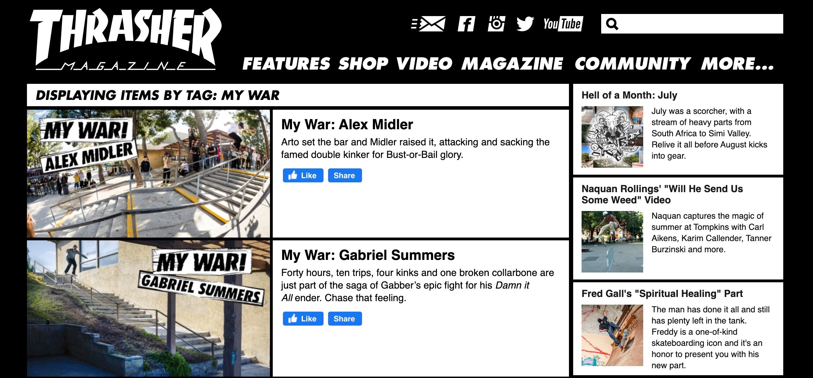

David Peak
senior editor
Go to David’s pick


I have to start by saying that Dopesick is almost excruciating to watch. If you’re looking for something with a summery air, this show is absolutely not for you. My husband and I would feel so bad after watching an episode that we would have to turn on Seinfeld or Friends as a palate cleanser before going about our evening.
If you’re still with me, Dopesick is a drama miniseries that explores the rise of OxyContin and its absolute wreckage in towns across the United States. You see this through the lens of the Sackler family of Purdue Pharma, the sales reps responsible for pushing the drug, the doctors they preyed on with false marketing, and the patients—and their loved ones—who fall victim to the drug. And you witness the efforts of the DEA and US attorneys who went after Purdue. Yes, you will get icky feels and come away wondering who ever thought capitalism was a good idea anyway. But it’s a super compelling series that’s incredibly well done and brilliantly acted.
Annie Mullowney
senior editor
Go to Annie’s pick
Becky O’Brien project manager
Go to Becky’s pick

I’ve always really admired skateboarders, particularly the dedication and single-minded obsession that goes into what they do. The series My War from Thrasher Magazine shows how tenacity, toughness, and an unwillingness to back down can help overcome seemingly impossible obstacles. It’s hugely motivating, sometimes-painful viewing, but ultimately, it’s life affirming.

Like many people, I have a good chunk of vacation time coming up this month. We’re splitting the time between Western Michigan, which we absolutely adore, and Fripp Island, South Carolina, which we’ve never visited. My brother vacations at this same beach almost every year with his family, and we’re joining them this year.
I don’t think of myself as the kind of person who likes repeat vacations. Yet I frequently find myself in places I’ve visited before: the Colorado Rockies, Napa, the Smoky Mountains, Treasure Island, Florida. There’s always a justification—and let’s be real, it’s almost always family—but the fact remains that there are places I can’t seem to stay away from. It got me wondering about other people’s favorite places in the world. Both the ones they’re drawn to again and again and the ones that stand out in their memory as the best of the best.
Below, we share these superior travel spots, as well as some things people might enjoy doing, listening to, and watching while getting away—and one show that definitely does not have vacation vibes.
After a long day of working and chasing after my three kids under six, I like to decompress by playing Nonogram Color on my phone. Nonogram is a Japanese puzzle app in which you’re “given an incomplete run-length-encoded description of an image and you must find a picture.” Not only does it remind me of a color puzzle game I loved as a kid, but it feels like a good workout for my brain.

Judy and Mary is a well-known band that gained massive popularity in Japan during the mid-1990s. Even with their relevance in the Japanese pop-culture sphere, I had no idea this group existed until I stumbled upon their music while browsing Spotify. A few notes into “Over Drive,” their most-recognized single, I was hooked. And the rest of the band’s discography consists of upbeat melodies, catchy arpeggiated chord progressions, and lyrically addictive choruses.
Despite their disbandment in 2001, their legacy continues through the thriving solo career of the band's former lead singer, Yuki (and through this blog post, of course).
Go to Erik’s pick
Erik Delfin
design associate

Our favorite vacation spots

KC:
camping in the Upper Peninsula
of Michigan
Karen:
Costa Rica
Allan:
Rehoboth Beach, Delaware
Mimi:
Marseille